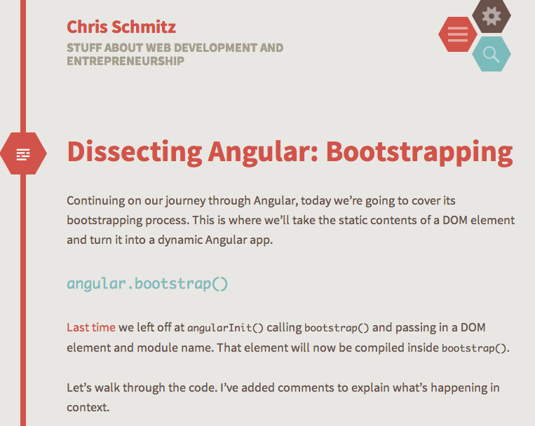

Getting started guides
A comprehensive getting started guide by the people behind ng-book. Published on July 29, 2013 at ng-newsletter
“I started learning 3 months ago and wish I knew these things earlier.” By Mark Collins. Posted on July 19, 2014
Understanding Angular’s $scope and $rootScope event system $emit, $broadcast and $on. By Todd Motto. Posted on June 11, 2014
How to inspect and control a running Angular app through the browser JavaScript console. By Max Lynch at the Ionic blog. Posted on June 29, 2014
Grokking directives

Learn how directives work by
testing them. By Ben Lesh at Try, Catch, Fail. Posted on June 27, 2013
“Because Angular is totally modular, you can easily replace any of its parts.”
Also useful for understanding how to mock stuff for testing. By Brian Ford (member of the AngularJS core team at Google). Posted on April 3, 2014
Also useful for understanding how to mock stuff for testing. By Brian Ford (member of the AngularJS core team at Google). Posted on April 3, 2014
“Directives are, essentially, the most powerful building blocks we have in Angular, yet for beginners they are incredibly easy to get messed up. Here are some guidelines that I’m pleased with, and that can help newcomers.” By Aviv Ben-Yosef at The Code Dump. Posted on March 30, 2014
“When writing an Angular directive, one can use any of the following functions to manipulate the DOM behaviour, contents and look of the element on which the directive is declared: compile,
controller, pre-link, post-link. So the question is: When should one use which?” StackOverflow question asked July 7, 2014
AngularJS screencast hosted by John Lindquist, JetBrains Evangelist. At Thinkster.io. Undated, c 2014
“Directives are a core AngularJS feature. From the framework directives you will use every day like ng-model or ng-repeat, to your own custom directives that allow you to extend the vocabulary of the browser, if you are learning AngularJS, you need to have a solid understanding of Directives.” 12 videos by Joel Hooks, at egghead.io. Undated, but the first is ca. Jan 2014
“There is little information available on the differences between the compile and link function ...” By Jurgen Van de Moere. Posted on August 30, 2014

“Although AngularJS is packed with powerful directives out of the box, often times we want to create our own reusable functionality. In this post, we’ll focus on how to tackle the seemingly complex process of creating directives.” Published on July 15, 2013
“If you need to do something more advanced inside your directive, something that you cannot do with an HTML template, you can use the compile() and link() functions instead.
“The compile() and link() functions define how the directive is to modify the HTML that matched the directive.” By Jakob Jenkov. Undated, part 9 of 13
“The compile() and link() functions define how the directive is to modify the HTML that matched the directive.” By Jakob Jenkov. Undated, part 9 of 13
“Generously reshared from AngularUI
"This document is a (tangential) attempt to explain how AngularJS directives and the related compiling engine works so that you're not flailing around like a noodle the first time you try to tackle it yourself.” Undated
"This document is a (tangential) attempt to explain how AngularJS directives and the related compiling engine works so that you're not flailing around like a noodle the first time you try to tackle it yourself.” Undated
“A directive is something that introduces new syntax. Directives are markers on a DOM element which attach a special behavior to it.” By Sandeep Panda. Published on January 14, 2014
Dig into the digest loop
The digest loop and dirty checking explained. StackOverflow question answered by Misko Hevery (the creator of Angular). Answered March 13, 2012
“Angular users want to know how data-binding works. There is a lot of vocabulary around this: $watch, $apply, $digest, dirty-checking… What are they and how do they work?” By Jesus Rodriguez. Posted on Aug 6, 2013
Wrap your brain around the injector
“Angular offers 3 different ways to register services to inject. They all do the same thing more or less, but each works a little bit differently. On top of that, Angular gives us 2 ways to register ‘values’ to get them injected just like services. And on top of that, Angular gives us 2 ways to access these 5 different registration functions… As you can see, with that many options, it can easily become a little overwhelming… ” By Chris Klug. Posted on February 27, 2014. Part 6 of 6.
“Dependency injection is nothing new. It’s a software design pattern that allows us to remove hard-coded dependencies and allows us to change defined dependencies at either compile time or run time.
“At run time, our code needs to know how to find the dependencies on which we’re basing our functionality. There are only so many ways that our code can get a hold of these dependencies. Either we tell our code how to look up the dependency from a global level or we pass the dependencies at run time to our objects.” Published at ng-newsletter on March 10, 2014
“At run time, our code needs to know how to find the dependencies on which we’re basing our functionality. There are only so many ways that our code can get a hold of these dependencies. Either we tell our code how to look up the dependency from a global level or we pass the dependencies at run time to our objects.” Published at ng-newsletter on March 10, 2014
“Angular has nifty providers, defined within respective modules, to provide shared functionality across the module. In other words, code can be modularized within a directory structure and still retain semantic cues to its modularity and consumability (because of implicit labeling). In better words: your code stays readable despite modularity.
“At least, it does if you know how providers work.” By Zach Pomerantz. Posted on June 8, 2014
“At least, it does if you know how providers work.” By Zach Pomerantz. Posted on June 8, 2014
Working with the router
“ui-router fully embraces the state-machine nature of a routing system. It allows you to define states, and transition your application to those states. The real win is that it allows you to decouple nested states, and do some very complicated layouts in an elegant way.” By Joel Hooks. Written July 2, 2013

“We are going to: (1) Create a root layout that will span every page. (2) Create a child layout that will be nested in the root layout; this child layout will contain a foundation to all settings pages. (3) Create content views for each of the settings pages.” By Nic Raboy. Posted on December 6, 2014
“The ui-router library for AngularJS provides several options for navigating between states in your application. You can navigate via the browser's URL bar, programatically with $state.go, and with the ui-sref directive on your HTML elements.” A video tutorial on UI-Router at egghead.io by Tim Kindberg. Written Jun 29, 2014
“The ui-router library is a routing framework that allows us to organize our interface by a state machine, rather than a simple URL route.
“This library provides for a lot of extra control in our views. We can created nested views, use multiple views on the same page, have multiple views that control a single view and more. For finer grain control and more complex applications, the ui-router is a great library to harness.” Published on September 15, 2013 at ng-newsletter
“This library provides for a lot of extra control in our views. We can created nested views, use multiple views on the same page, have multiple views that control a single view and more. For finer grain control and more complex applications, the ui-router is a great library to harness.” Published on September 15, 2013 at ng-newsletter
“The UI-Router provides a different approach than ngRoute in that it changes your application views based on state of the application and not just the route URL. With this approach, your views and routes aren’t tied down to the site URL. This way, you can change the parts of your site using your routing even if the URL does not change.” By Chris Sevilleja. Posted on March 10, 2014 at scotch.io
Making use of scope
An in-depth tutorial at Modern Web on AngularJS Scope, from $rootScope down through scope within Controllers and Directives.By Jonathan Creamer. Written on July 14, 2014
A quick trick for finding all the scopes on a page (which may no longer work). Answer posted at Stack Overflow by Misko Hevery on May 11, 2012
All about $scope from the author of ng-book:
“A $scope is an object that ties a view (a DOM element) to the controller. In the Model-View-Controller structure, this $scope object becomes the model. It provides an execution context that is bound to the DOM element (and its children).
“Although it sounds complex, the $scope is just a JavaScript object. Both the controller and the view have access to the $scope so it can be used for communication between the two.” Published on July 30, 2013 at ng-newsletter
“A $scope is an object that ties a view (a DOM element) to the controller. In the Model-View-Controller structure, this $scope object becomes the model. It provides an execution context that is bound to the DOM element (and its children).
“Although it sounds complex, the $scope is just a JavaScript object. Both the controller and the view have access to the $scope so it can be used for communication between the two.” Published on July 30, 2013 at ng-newsletter
“Scope Soup is when you build a tangled mess of Angular code that is completely coupled to $scope in really terrible ways. The unfortunate part is that you see a lot of examples like that. I've written code like that. But after a year and a half working on a massive Angular project, I can assure you there is a better way.” By Josh Carroll. Posted on March 21, 2014 at Techno Fattie
Promises in Angular
Egghead screencast on promises: “An AngularJS promise is a mechanism that lets you defer a stated action or series of actions at an earlier point of time until you explicitly declare that promise to be fulfilled (or resolved). Promises are useful for asynchronous operations. This video introduces the basic way to declare and resolve promises.” By John Lindquist. Undated, but pre-dates AngularJS ver 1.2
Explains a couple gotchas with the $q service: “For those of us who found ourselves working in Angular, the way the $q Promise library works can be a bit surprising. ... Usually, you'd expect [a promise] to be invoked immediately [upon resolution]. That's not necessarily the case with $q promises. Anything that executes on the next turn of the event loop needs to be wrapped in a $scope.$apply, including promise resolutions.” By Bilal Quadri. Posted on May 18, 2014 at Poetry and Code
“Promises can be used to unnest asynchronous functions and allows one to chain multiple functions together — increasing readability and making individual functions, within the chain, more reusable.”By Liam Kaufman. Posted on September 9, 2013
“Every Sunday morning, a father asks his son to go and find out the weather forecast for the afternoon, by using his super-strong telescope to look across the horizon from the tallest hill by their house. The son promises his dad he will go and get the weather forecast. He creates a promise with his dad at the door when he leaves.
“At that point, the dad decides if the weather tomorrow is good, he'll prepare a fishing trip for tomorrow. If it's bad he won't. Also, if the son is unable to get a forecast, he'll stay in as well.
“This analogy demonstrates the asynchronous nature of the request for the weather forecast the dad makes to his son. The dad doesn't want to wait at the door anticipating when his son [will return], because he has other stuff to do. Instead, he makes a promise at the door, and decides what will happen in either of the 3 scenarios (good weather/bad weather/no forecast). The son immediately gives a promise to his dad when he leaves, and will resolve or reject it on his return.” By Andy Shora. Undated, ca. 2013
“At that point, the dad decides if the weather tomorrow is good, he'll prepare a fishing trip for tomorrow. If it's bad he won't. Also, if the son is unable to get a forecast, he'll stay in as well.
“This analogy demonstrates the asynchronous nature of the request for the weather forecast the dad makes to his son. The dad doesn't want to wait at the door anticipating when his son [will return], because he has other stuff to do. Instead, he makes a promise at the door, and decides what will happen in either of the 3 scenarios (good weather/bad weather/no forecast). The son immediately gives a promise to his dad when he leaves, and will resolve or reject it on his return.” By Andy Shora. Undated, ca. 2013
Testing in Angular
How to preprocess and load up your templates in the templateCache. By John Gordon. Posted on July 3, 2013 at Portland Webworks
“Like so many things with Angular, however, I was finding that although unit testing was simple, it was not easy. Examples were sparse and though the official documentation provided some snippets of examples, putting it all together in my ‘real-world’ case was proving challenging. So here I’ve written a little bit about how I ended up getting that wonderful green light for a passing build to show up.” By Nathan LeClaire. Posted on December 13, 2013
A big SitePoint article on testing in Angular:
“The job of every unit test is to test the functionality of a piece of code in isolation. Isolating the system under test can be challenging at times as dependencies may come from different sets of sources and we need to fully understand the responsibilities of the object to be mocked.
“Mocking is difficult in non-statically typed languages like JavaScript, as it is not easy to understand structure of the object to be mocked. At the same time, it also provides a flexibility of mocking only part of the object that is currently in use by the system under test and ignore the rest.” By Ravi Kiran. Published October 30, 2014
“The job of every unit test is to test the functionality of a piece of code in isolation. Isolating the system under test can be challenging at times as dependencies may come from different sets of sources and we need to fully understand the responsibilities of the object to be mocked.
“Mocking is difficult in non-statically typed languages like JavaScript, as it is not easy to understand structure of the object to be mocked. At the same time, it also provides a flexibility of mocking only part of the object that is currently in use by the system under test and ignore the rest.” By Ravi Kiran. Published October 30, 2014
“Unit testing improves code’s orthogonality. Fundamentally, code is called ‘orthogonal’ when it’s easy to change. Fixing a bug or adding a feature entails nothing but changing the code’s behavior, as explained in The Pragmatic Programmer: From Journeyman to Master. Unit tests greatly improve code’s orthogonality by forcing you to write modular logic units, instead of large code chunks.
“Unit testing also provides you with documentation that is always up to date and that informs you about the code’s intentions and functional behavior. Even if a method has a cryptic name — which is bad, but we won’t get into that here — you’ll instantly know what it does by reading its test.” By Sébastien Fragnaud. Published on October 7, 2014 at Smashing Magazine
“Unit testing also provides you with documentation that is always up to date and that informs you about the code’s intentions and functional behavior. Even if a method has a cryptic name — which is bad, but we won’t get into that here — you’ll instantly know what it does by reading its test.” By Sébastien Fragnaud. Published on October 7, 2014 at Smashing Magazine

There's a useful bit at the end for mocking big dependencies. “The bootstrapping process.is where we’ll take the static contents of a DOM element and turn it into a dynamic Angular app.” By Chris Schmitz. Posted on June 17, 2014
“The new, preferred end-to-end testing framework is called Protractor. Unlike the Angular scenario runner, Protractor is built on Selenium’s WebDriver, which is an API, written as extensions, for controlling browsers.
“WebDriver has extensions for all sorts of different browsers, including the most popular. We gain speed and stability in our tests by developing against true web browsers.
“Luckily, Protractor is built atop the Jasmine framework, so we don’t need to learn a new framework in order to use it. We can also install it as a standalone test runner or embed it in our tests as a library. Published on January 14, 2014 at ng-newsletter
“WebDriver has extensions for all sorts of different browsers, including the most popular. We gain speed and stability in our tests by developing against true web browsers.
“Luckily, Protractor is built atop the Jasmine framework, so we don’t need to learn a new framework in order to use it. We can also install it as a standalone test runner or embed it in our tests as a library. Published on January 14, 2014 at ng-newsletter
All about animations
“Yesterday I was stumped on how to effectively set up nested transition animations in AngularJS with ui-router.
“I didn’t want to use JavaScript and muck up controllers, so I found a very simple and clean solution using LESS.
“To start, make sure you include ngAnimate and ui-router in your app and you have a handle on nested views and CSS animations in general.
“The goal is to have animation happen in the sidebar and dashboard ui-views when the master ui-view state changes.”By Dave Chenell. Posted on 17 Jul 2014 at The Water Bear
“I didn’t want to use JavaScript and muck up controllers, so I found a very simple and clean solution using LESS.
“To start, make sure you include ngAnimate and ui-router in your app and you have a handle on nested views and CSS animations in general.
“The goal is to have animation happen in the sidebar and dashboard ui-views when the master ui-view state changes.”By Dave Chenell. Posted on 17 Jul 2014 at The Water Bear
An intro to CSS3 animations and JavaScript animations in Angular. Published on October 07, 2013 at ng-newsletter
A helper library for animations in Angular. “ng-Fx does not rely on CSS for animations. This allows it to be dynamic and able to adjust on the fly. The only predefined CSS classes are the animations and the easings. ngAnimate allows ngFx to create JavaScript based animations, so the classes do not correspond to a style in a CSS file.” By Scott Moss. Updated to v1.3
Fixing Angular performance problems
Sometimes for troubleshooting purposes it is important to understand how many watches exist in an Angular app.
Get your development environment going
Awesome Angular open source code
A JavaScript library providing multiple simultaneous, stable, fault-tolerant and resumable/restartable file uploads via the HTML5 File API.
Built on top of D3.js and AngularJS, n3-line-chart creates beautiful charts in AngularJS applications.
Miscellaneous but super useful
Angular news
Free resources
Tools for Angular
Angular training
Folks to follow on Twitter